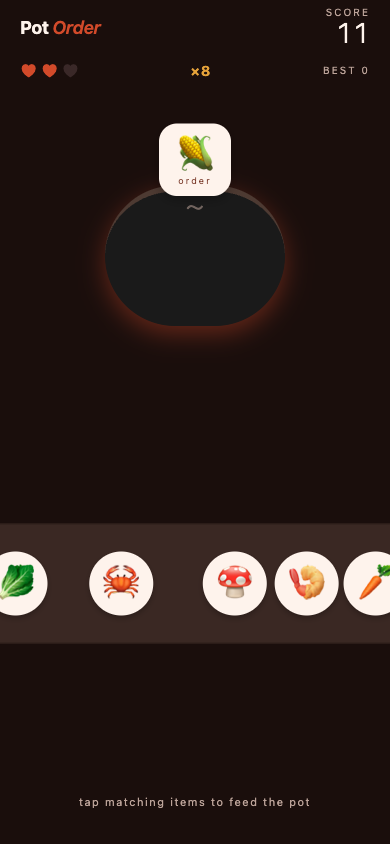

A small one-thumb cooking puzzle for iPhone. The pot calls out an ingredient, you tap the matching item before it slides off the belt — no ads, no in-app purchases, no signup.
v1.0.0·iPhone · iOS 16+
Look inside
A new round opens. The pot orders one ingredient; matching items slide into view from the right.

Eight matches in. The combo multiplier (×8) has just unlocked Fever mode — two-times scoring for six seconds.
Overview
How it works
A single-screen reflex puzzle. The pot at the top of the screen orders one ingredient at a time. Ingredients ride a conveyor belt across the bottom — tap the one that matches the order before it slides off the edge.
Three misses ends the round.
Consecutive correct matches build a combo (×2, ×3, …) that multiplies your points.
Hit a combo of eight and you trigger Fever — every match counts double for six seconds.
The conveyor speeds up the higher your score climbs.
Differences from the usual
What's not in this app
No advertising. No in-app purchases. No coin shop, no energy meter, no daily-login reward, no leaderboard server. The only thing saved is your local high score — once, on your device.
Settings
Can I turn off haptics?
Yes. The toggle is on the start screen below the Start cooking button. It persists across launches.
Visuals
Why emoji instead of illustrated art?
This is a minimum-viable build. Emoji ship with iOS, render crisply at every size, and avoid licensing custom artwork for an indie release. A future version may swap in custom illustrations; the mechanics will stay the same.